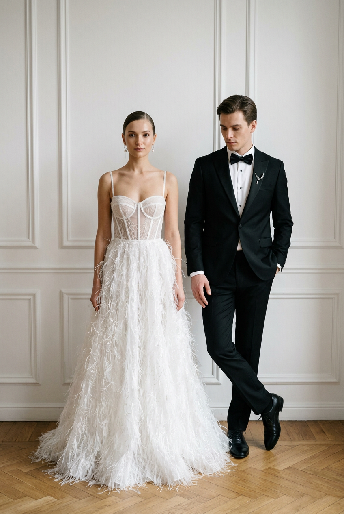
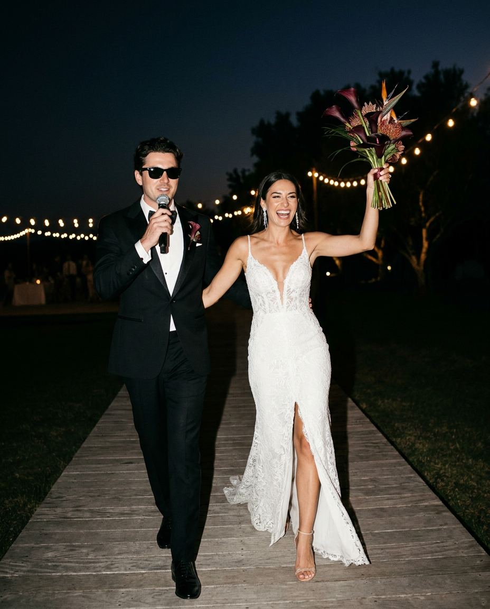
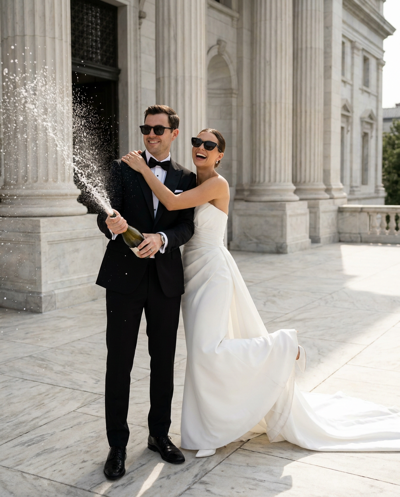
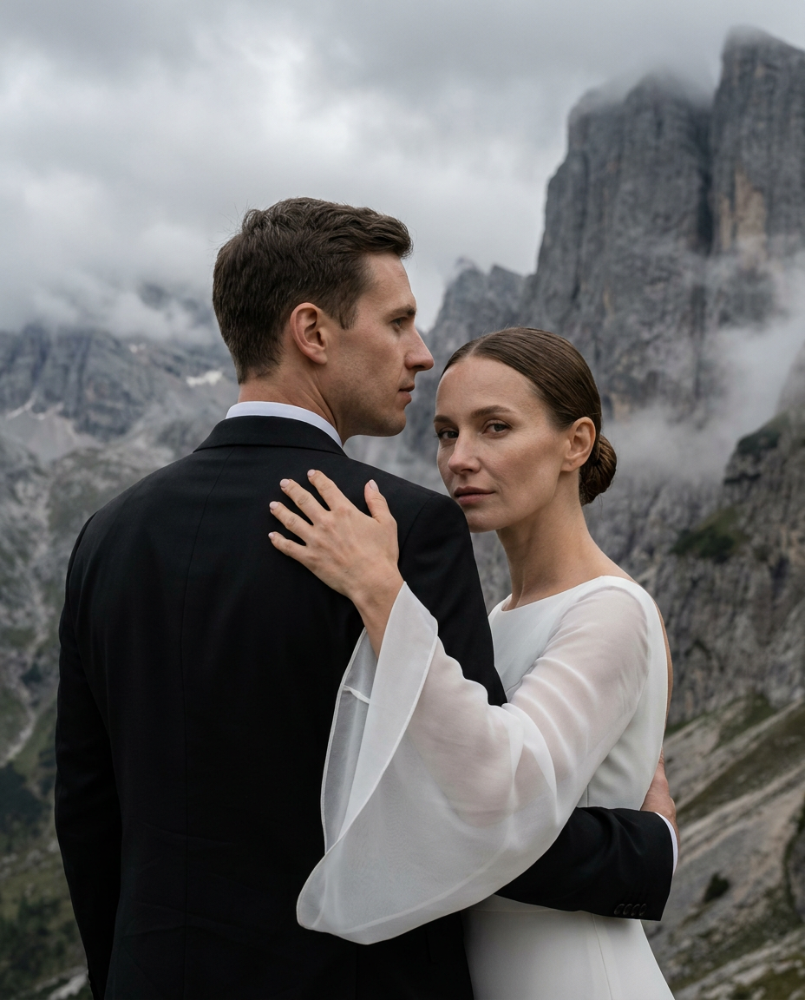
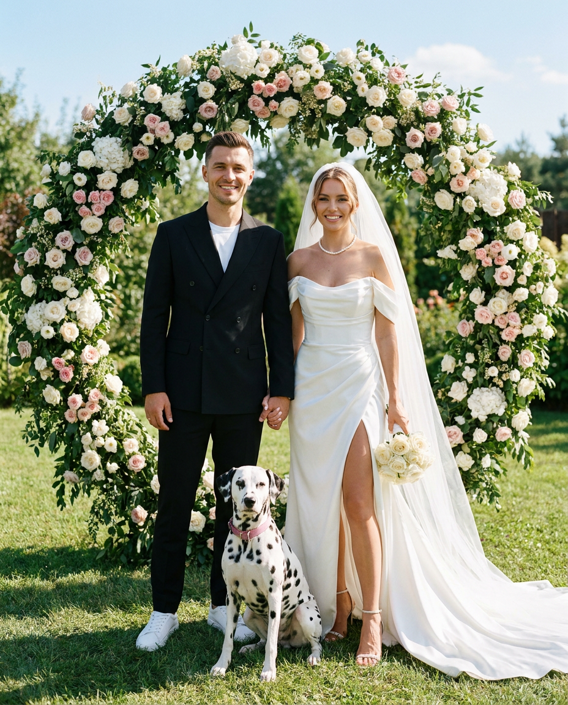
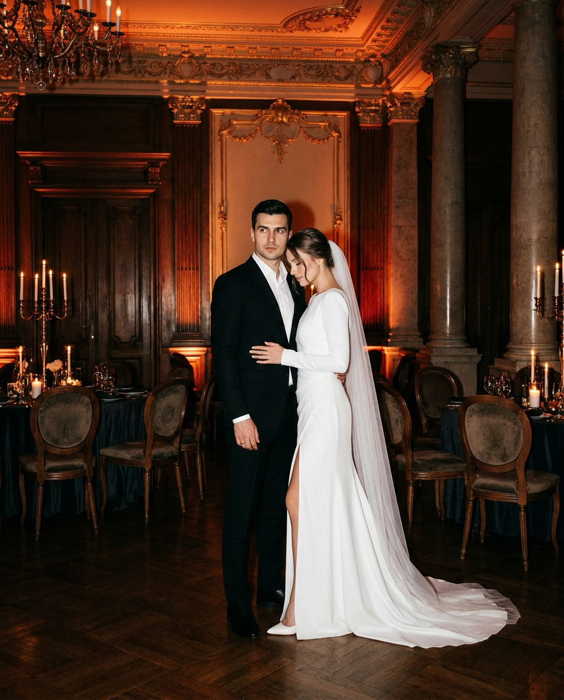
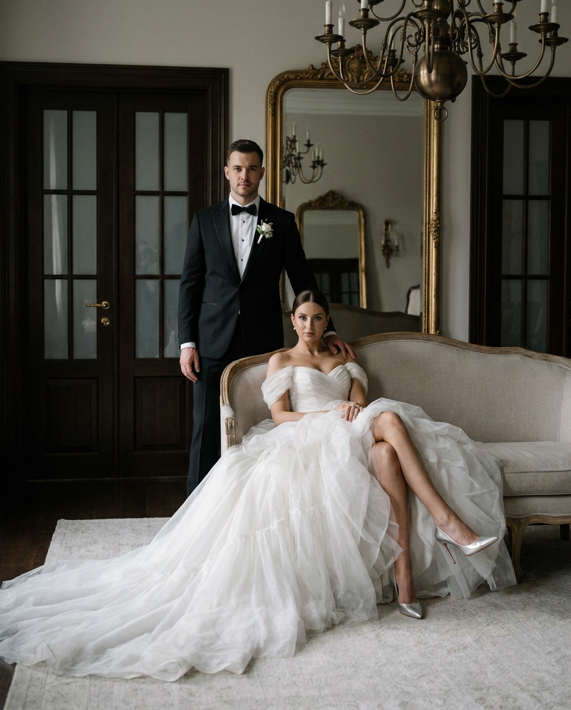
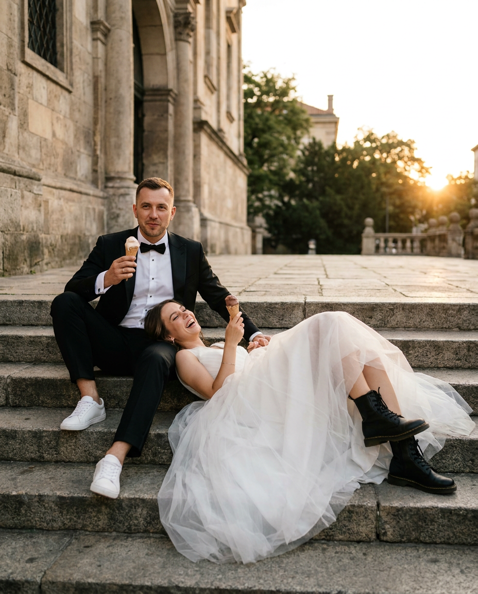
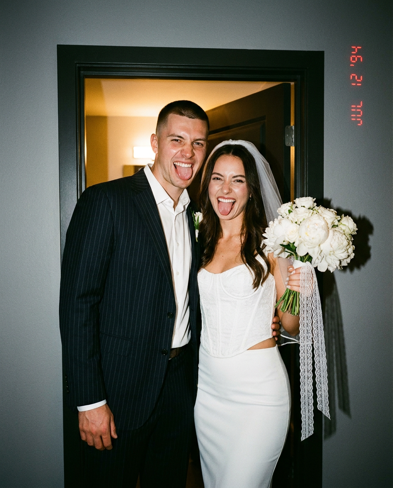
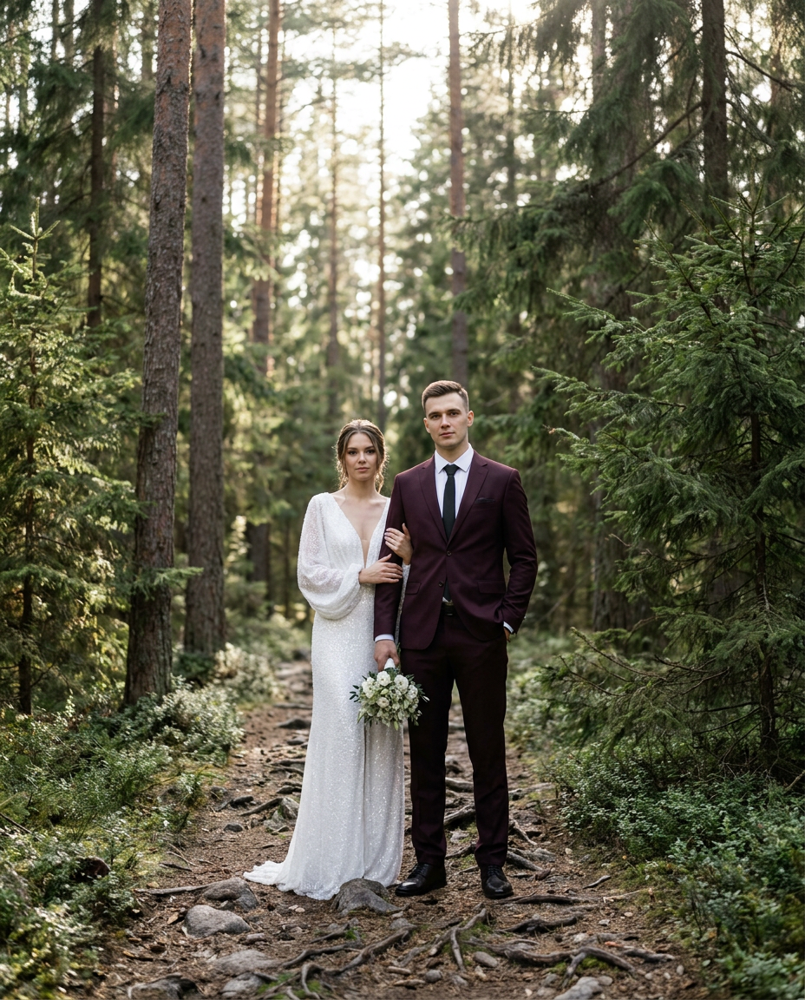

Свадебная ИИ-фотосессия: 10 промптов для нейросети

Профессиональная свадебная съёмка требует бюджета, подходящей локации и удачной погоды, а переснять важный момент бывает невозможно. Генерация помогает заранее придумать визуальный стиль и получить эффектные кадры даже без аренды студии.
В подборке — 10 готовых сценариев для свадебной ИИ-фотосессии: от спокойного luxury-портрета и барочного интерьера до горного пейзажа, лесной тропы, игривого кадра с мороженым и плёночной эстетики 90-х.
Как сгенерировать такое фото: пошагово
Нужен снимок анфас при ровном свете, лицо в кадре целиком, без тёмных очков и головных уборов. Разрешение от 1000 пикселей по короткой стороне. Чем чётче исходник, тем точнее модель повторит черты.
Выберите сценарий ниже и нажмите «Копировать» — текст уйдёт в буфер целиком, вместе с командой сохранения внешности. Эта команда стоит первой строкой и отвечает за то, чтобы на выходе было ваше лицо, а не случайное.
Кнопка «Сгенерировать» рядом с каждым промптом открывает модель в новой вкладке. Nano Banana Pro работает с референсом лица — в отличие от моделей, которые генерируют портрет с нуля и узнаваемость теряют.
Промпт — в поле ввода, портрет — через загрузку референса. Порядок значения не имеет, но без референса команда сохранения внешности работать не будет: модели нечего сохранять.
Для сторис и ленты берите 9:16, для превью и обложек — 4:3. Первый результат редко идеален: если поза или свет ушли не туда, поправьте соответствующую часть промпта и запустите заново. Обычно хватает двух-трёх итераций.
10 промптов для генерации
1. Минималистичный bridal editorial
Строго сохранить внешность по загруженному референсу: черты лица, пропорции, мимику и текстуру кожи без изменений. Фотореалистичный свадебный fashion-портрет пары в светлом минималистичном интерьере: белая стена с декоративными панелями, деревянный паркет, мягкий дневной свет и едва заметная тень на фоне. Невеста стоит слева в белом платье с полупрозрачным корсетным лифом, тонкими бретелями и объёмной фактурной юбкой из перьев или тонких нитей. Волосы гладко убраны назад, на ушах лаконичные серьги, взгляд спокойный и уверенный, прямо в объектив. Справа жених в чёрном смокинге, белой рубашке, бабочке и стильном аксессуаре: одна рука в кармане, другая свободно опущена, ноги слегка перекрещены, взгляд направлен вниз или в сторону. Luxury wedding editorial, high fashion bridal portrait, нейтральная палитра, дорогая сдержанная атмосфера, лёгкий film look, высокая детализация.
2. Ночной танец под гирляндами

Строго сохранить внешность по загруженному референсу: черты лица, пропорции, мимику и текстуру кожи без изменений. Фотореалистичный ночной свадебный снимок пары, которая идёт по деревянному настилу на фоне почти чёрного неба и размытых огней гирлянд. Жених одет в чёрный смокинг с атласными лацканами и тёмные очки; в одной руке он держит микрофон, второй ведёт невесту. На женщине облегающее белое кружевное платье на тонких бретелях с глубоким V-вырезом и высоким разрезом, длинные серьги и босоножки на каблуках. Она смеётся, поднимая букет из тёмно-бордовых калл и экзотических цветов. Передайте движение, энергию праздника и живую реакцию пары. Съёмка со вспышкой: ярко освещённые герои, глубокие тени, контраст, лёгкая плёночная зернистость, атмосфера ночного свадебного приёма. Вертикальный кадр, лица — по двум референсам.
3. Шампанское у колонн

Строго сохранить внешность по загруженному референсу: черты лица, пропорции, мимику и текстуру кожи без изменений. Фотореалистичная свадебная fashion-сцена на мраморной площади перед величественным классическим зданием с высокими колоннами. Жених в чёрном смокинге, белой рубашке и чёрной бабочке держит бутылку шампанского; на нём тёмные солнцезащитные очки. Невеста рядом — в роскошном белом платье без бретелей с длинным шлейфом, также в тёмных очках; она смеётся, обнимает мужчину, а одна её нога слегка поднята. В момент съёмки шампанское мощно вырывается из бутылки: многочисленные капли застывают в солнечном свете. Настроение свободное и радостное, будто пойман настоящий candid-момент. Luxury wedding editorial, ultra realistic, естественная кожа, мягкий контраст, cinematic daylight, высокая детализация, вертикальный формат 4:5. Использовать лица пары с двух референс-фотографий.
4. Эпос среди серых гор

Строго сохранить внешность по загруженному референсу: черты лица, пропорции, мимику и текстуру кожи без изменений. Фотореалистичный эпический свадебный портрет на фоне сурового горного ландшафта. Жених стоит на переднем плане в классическом чёрном костюме, корпус развёрнут от камеры, лицо показано в профиль. Невеста обнимает его сбоку и кладёт руку на плечо; на ней минималистичное белое платье с длинными широкими полупрозрачными рукавами, волосы собраны в строгий низкий пучок, лицо обращено к объективу в три четверти. Позади — массивные серые скалы, отвесные склоны, пасмурное небо и лёгкая дымка. Композиция лаконичная, с большим ощущением пространства и масштаба. Приглушённые природные оттенки, мягкий рассеянный свет, драматичная кинематографичная атмосфера, fine art wedding, эпичный минимализм. Лица мужчины и женщины взять с соответствующих референсов.
5. Садовая арка и далматинец

Строго сохранить внешность по загруженному референсу: черты лица, пропорции, мимику и текстуру кожи без изменений. Фотореалистичный свадебный fashion-кадр в солнечном саду: пара стоит перед большой круглой цветочной аркой, собранной из белых и розовых роз с пышной зеленью. Жених в чёрном двубортном пиджаке, белой футболке и белых кроссовках держит невесту за руку. На женщине белое атласное платье с открытыми плечами, длинным шлейфом, разрезом на ноге и длинной фатой; на шее жемчужное ожерелье, в руке букет белых роз, на ногах босоножки на шпильке. Перед парой сидит далматинец в розовом ошейнике. Яркий естественный свет, голубое небо, тёплая плёночная цветопередача, лёгкое зерно, радостное настроение, ultra realistic, высокая детализация, натуральная кожа. Лица пары использовать по двум референс-фото без стилизации.
6. Барочный банкетный зал

Строго сохранить внешность по загруженному референсу: черты лица, пропорции, мимику и текстуру кожи без изменений. Фотореалистичная свадебная fashion-фотография в роскошном старинном зале с барочными колоннами, лепниной, тёмным деревянным паркетом и тёплым оранжево-красным освещением. В центре стоит пара. Жених в чёрном классическом костюме и белой рубашке выглядит серьёзно и уверенно, смотрит немного в сторону. Невеста нежно прижимается к нему: одна рука лежит на его талии, голова слегка склонена к плечу. На ней длинное белое платье с высоким разрезом, мягкой драпировкой и длинной фатой. Вокруг видны столы с тёмными скатертями, бархатные стулья, бокалы и свечи. Вечерняя театральная атмосфера, dark luxury, реалистичная кожа, естественные пропорции, мягкие тени, editorial wedding shoot, высокая детализация. Лица жениха и невесты взять строго из референсов.
7. Dark luxury на винтажном диване

Строго сохранить внешность по загруженному референсу: черты лица, пропорции, мимику и текстуру кожи без изменений. Фотореалистичный editorial-портрет пары в классическом интерьере с эстетикой dark luxury. Невеста сидит на светлом винтажном диване в элегантной позе, ноги изящно скрещены; на ней роскошное белое платье с открытыми плечами, пышной многослойной юбкой и длинным шлейфом, на ногах серебристые туфли-лодочки на шпильке. Жених стоит за диваном в чёрном смокинге, белой рубашке, чёрной бабочке и бутоньерке, положив руку на спинку или плечо женщины. На заднем плане — тёмные деревянные двери со стеклянными вставками, большое зеркало в золочёной раме с отражением, бронзовая люстра и светлый ковёр. Moody cinematic lighting, мягкие тени, приглушённая палитра, контраст белого платья и тёмного интерьера. Использовать лица обоих с референс-фотографий.
8. Мороженое на городских ступенях

Строго сохранить внешность по загруженному референсу: черты лица, пропорции, мимику и текстуру кожи без изменений. Фотореалистичный lifestyle-кадр пары в свадебных нарядах на каменной городской лестнице в тёплый вечерний час. Жених сидит на ступенях в чёрном смокинге, белой рубашке, бабочке и белых кедах; в руке у него рожок мороженого, выражение расслабленное и уверенное. Невеста лежит рядом на ступенях, смеётся и держит своё мороженое. На ней белое свадебное платье с объёмной лёгкой юбкой, на ногах чёрные ботинки. Образ игривый, модный и непринуждённый. Позади — красивое городское здание, лестница и деревья. Мягкий golden hour light, тёплые натуральные цвета, candid romantic editorial, естественная кожа, мягкая глубина резкости, fashion photography, ultra realistic, высокая детализация, вертикальный формат 4:5. Лица заменить лицами с двух референсов.
9. Плёночная свадьба 90-х

Строго сохранить внешность по загруженному референсу: черты лица, пропорции, мимику и текстуру кожи без изменений. Фотореалистичная свадебная фотография с эстетикой плёнки 1990-х. Пара стоит в дверном проёме и дерзко позирует прямо в камеру: оба широко улыбаются, показывают язык или корчат смешные гримасы, настроение максимально неформальное и живое. Жених в тёмном костюме в тонкую полоску и белой рубашке, с короткой стрижкой. Невеста в белом корсетном топе с фактурным узором и облегающей юбкой, на голове короткая фата; в руке букет белых пионов и роз с длинными кружевными лентами. За ними простой интерьер: серая стена, тёмный проём и тёплый свет из соседнего помещения. Прямая вспышка, лёгкое зерно, тёплые приглушённые цвета, характерная flash photography aesthetic. Добавить красные цифры даты в правом верхнем углу, как на старом снимке. Лица взять с двух референсов.
10. Лесная тропа в контровом свете

Строго сохранить внешность по загруженному референсу: черты лица, пропорции, мимику и текстуру кожи без изменений. Фотореалистичная свадебная fashion-фотография в хвойном лесу: пара стоит в полный рост на узкой дорожке среди высоких сосен и елей, вокруг камни и выступающие корни. Мягкий дневной свет проходит сквозь кроны и создаёт красивую подсветку сзади. Жених находится чуть правее центра, впереди, в бордовом или винном классическом костюме, белой рубашке и чёрном галстуке; одна рука в кармане, поза спокойная и уверенная, взгляд направлен в камеру. Невеста стоит немного позади слева, слегка держится за его руку или локоть. На ней длинное белое платье с мерцающими деталями, глубоким V-вырезом и свободными длинными рукавами; в другой руке небольшой букет белых цветов с зеленью. Luxury outdoor wedding editorial, elegant forest portrait, натуральные цвета, мягкий контраст, cinematic natural light, высокая детализация.
Что важно учесть в этом стиле
Свадебный кадр держится на трёх вещах: узнаваемых лицах, понятной позе и согласованном свете. Если фон драматичный, одежду лучше описывать особенно точно: цвет костюма, форму выреза, материал платья, фату и аксессуары. Иначе нейросеть начнёт смешивать детали.
Для портретов задавайте вертикальный формат 4:5 и просите естественную кожу, корректные кисти и анатомию. При работе с референсами полезно отдельно указывать, какое лицо относится к жениху, а какое — к невесте. Для сложных сцен вроде шампанского, зеркала или вспышки закладывайте несколько генераций: с первого раза мелкие элементы часто меняются.
Идеи для вариаций
- Замените интерьер на оранжерею, музейный зал или пустой театр, сохранив позу пары.
- Попросите съёмку с объективом 50 мм для естественной перспективы или 85 мм для мягкого свадебного портрета.
- Добавьте дождь, мокрый асфальт и отражения для вечерней городской версии.
- Поменяйте букет на белые пионы, сухоцветы, ветви эвкалипта или яркие анемоны.
- Сделайте серию в одном стиле: общий план, кадр по пояс и крупный портрет с тем же светом.
Как собрать свой промпт
Начните с типа кадра и настроения: свадебный портрет, candid-сцена, fashion editorial или плёночная фотография. Затем опишите локацию, расположение героев, одежду и жесты. В конце добавьте свет, цветовую обработку, формат кадра и уровень реализма.
Не перегружайте запрос взаимоисключающими условиями. Для сложного образа лучше указать один главный источник света, конкретную оптику и вертикальное соотношение сторон. Если используете референсы, отдельно пропишите, чьё лицо нужно применить, а также добавьте запрет на лишние пальцы, двойные аксессуары, искажённые глаза и нечитаемые надписи.
Ошибки, из-за которых кадр не получается
- Слишком много деталей в одной сцене. Модель теряет часть одежды, декора или аксессуаров; разделяйте описание на локацию, героев и свет.
- Не задана композиция. Указывайте, кто стоит слева, кто впереди, куда направлен взгляд и какая часть тела попадает в кадр.
- Нет ограничений для фона. Без этого интерьер может стать перегруженным, а горы или лес — неузнаваемыми.
- Сложные лица и мелкие надписи. Референс не гарантирует идеальную идентичность, а дату на плёнке иногда лучше добавить отдельным редактором.
- Противоречивый свет. Не сочетайте прямую вспышку, мягкий пасмурный день и контровое солнце, если это не задуманный эффект.
Частые вопросы
Как сделать такое ИИ-фото бесплатно?
Для первых попыток подойдут Kandinsky и Шедеврум: они позволяют генерировать изображения без оплаты, но число попыток, скорость и качество могут меняться. Krea AI и Arena.ai удобны для экспериментов, однако бесплатный доступ обычно ограничивает очередь, разрешение или количество генераций. Работа с референсом лица доступна не во всех режимах и не всегда сохраняет идентичность точно, поэтому рассчитывайте на несколько дублей и последующую ретушь.
Как сохранить лица жениха и невесты?
Загрузите отдельные чёткие портреты без сильных фильтров, укажите соответствие референсов и не меняйте резко возраст, ракурс или причёску. Лучше начинать с фронтального или трёхчетвертного плана, а затем переходить к сложным позам.
Почему нейросеть меняет свадебное платье?
Платье может потеряться из-за длинного списка объектов, движения или сложного фона. Опишите его отдельным блоком: силуэт, ткань, вырез, рукава, шлейф и цвет. Для точности генерируйте сначала спокойный портрет, а динамику добавляйте позже.
Как получить реалистичный свадебный кадр?
Укажите естественную кожу, корректную анатомию, мягкую глубину резкости и конкретный тип света. Полезно задать объектив 50 или 85 мм, формат 4:5 и попросить editorial wedding photography. После генерации проверьте руки, украшения, зубы, края фаты и мелкие детали одежды.